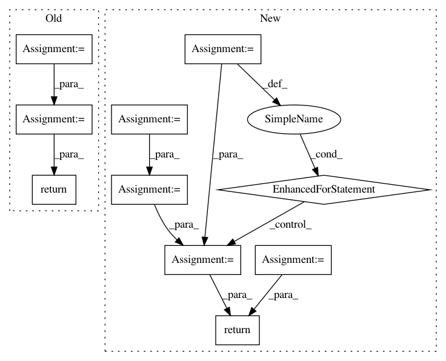

3a770cbc97085c2cd4eaa0a46b2bc037f35389c2,utils.py,,evaluate_accuracy,#Any#Any#Any#,77
Before Change
data_iterator.reset()
for i, batch in enumerate(data_iterator):
data, label = _get_batch(batch, ctx)
output = net(data)
acc += accuracy(output, label)
return acc / (i+1)
def train(train_data, test_data, net, loss, trainer, ctx, num_epochs, print_batches=None):
Train a network
for epoch in range(num_epochs):
After Change
data.shape[0])
def evaluate_accuracy(data_iterator, net, ctx=[mx.cpu()]):
acc = nd.array([0])
n = 0.
if isinstance(data_iterator, mx.io.MXDataIter):
data_iterator.reset()
for batch in data_iterator:
data, label, batch_size = _get_batch(batch, ctx)
for X, y in zip(data, label):
acc += nd.sum(net(X).argmax(axis=1)==y).copyto(mx.cpu())
acc.wait_to_read() // don"t push too many operators into backend
n += batch_size
return acc.asscalar() / n
def train(train_data, test_data, net, loss, trainer, ctx, num_epochs, print_batches=None):
Train a network
if isinstance(ctx, mx.Context):
In pattern: SUPERPATTERN
Frequency: 3
Non-data size: 10
Instances
Project Name: d2l-ai/d2l-zh
Commit Name: 3a770cbc97085c2cd4eaa0a46b2bc037f35389c2
Time: 2017-10-25
Author: muli@cs.cmu.edu
File Name: utils.py
Class Name:
Method Name: evaluate_accuracy
Project Name: GoogleCloudPlatform/PerfKitBenchmarker
Commit Name: 58f057c0dd1b28cb388c3fd9538bc67289c4e15e
Time: 2015-08-26
Author: nlavine@google.com
File Name: perfkitbenchmarker/benchmarks/fio_benchmark.py
Class Name:
Method Name: GenerateJobFileString
Project Name: Scitator/catalyst
Commit Name: 1a73a1367fedfa8368b6c42103e60e1b370bc14a
Time: 2019-04-19
Author: scitator@gmail.com
File Name: catalyst/contrib/criterion/focal_loss.py
Class Name: FocalLoss
Method Name: forward